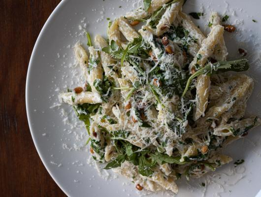

Pasta with argulua, ricotta and pine nuts

Pasta is the gift that keep on giving. Reciepes are just so much fun and everyone enjoys it. I especially loved
cooking the pine nuts with the oil. A perfect nutty balance. Ready in between 20 mintues from the time you put
the pot of water on to boil to the time you are ready to sit down at the dining room table.
Ingredients
- 1 pound of penne pasta
- 6 tablespoons olive oil
- 2/3 pine nuts
- 5 ounces argula, roughly chopped
- 2 tablespoons chopped fresh parsely
- 2 tablespoons chopped fresh basil
- 1 1/2 cup whole milk ricotta cheese
- 1/2 cup parmesan cheese
Preparation
- Bring a large pot of salted boiling water to a full boil. Add the penne pasta and cook according to package
instruction for al dente
- In a small skillet add the olive oil and warm over meduium-low heat. Add the pine nuts and cook over
medium-low until they become golden.
- Reserve 1/2 cup of the boiling water of the pasta before draining. Drain the pasta and add them back to the
pot. Add the pine nuts and the oil they cooked in. Add the argula, parsley, basil, ricotta and half of the
paramesan cheese. Mix well until all the ricotta cheese is melted and the pasta is well coated with the
sauce.
- Serve the pasta in warm dishes and sprinkle the reaminder o the cheese over it.
This reciepe is from Foodista.com by Giangi Townsend